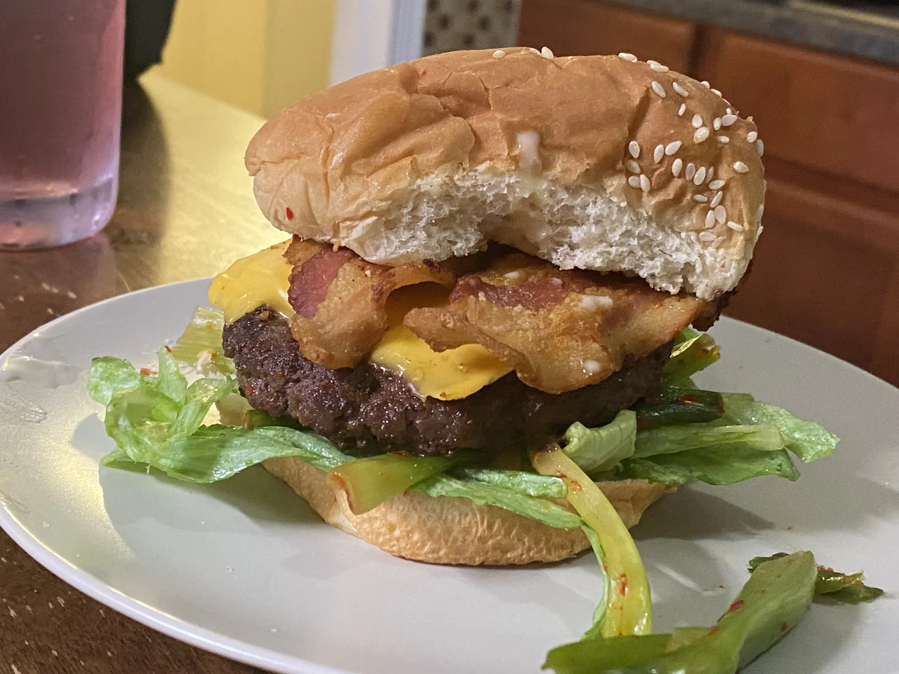

The Unbreakable Kimchi Schmidt Burger

Description
The show Bob's Burgers is a hilarious cartoon following the (mis)adventures of Bob Belcher and his family. Many of the scenes take place inside the show's eponymous Bob's Burgers restaurant, where watchers with a keen eye can spot a unique Burger of the Day in every episode.
These special burgers are a running gag in nearly every episode the show, and the names are always some form of pun and/or wordplay. Some of these burgers sound like they could be reasonably good (like Season 1's Spaghetti Western & Meatballs, while some sound downright revolting - I doubt Season 3's O.T. The Outside Toilet burger had too many takers!
Below, we're showcasing a kimchi-forward burger inspired by the show's The Unbreakable Kimchi Schmidt burger - with a name riffing on the show The Unbreakable Kimmy Schmidt - that actually tastes great and could hold its own next to many more traditional burger recipes!
Ingredients
- Beef patties of your choice
- Garlic powder
- Onion powder
- Scallion kimchi - can be found at any local Asian grocer
- American cheese
- Lettuce
- Bacon
- Mayonnaise
- Mirin
- Sesame buns
- Salt and pepper to taste
Steps
- Season the beef patties with salt, pepper, garlic powder, and onion powder
- Place the beef patties on a nonstick pan at medium-high heat
- After 5 minutes or when lightly browed, flip the patties
- On a separate skillet, cook your bacon slices on high heat for ~2-3 minutes (longer for crispier bacon)
- After 2 minutes, place the slices of American cheese on top of the patties and cover the skillet
- While the patties finish, mix the mayo with a bit of mirin to taste
- Transfer the patties to a plate and lower the heat to low
- Remove the bacon to a plate lined with napkins and lightly dab to remove excess grease
- Place the buns on the skillet used for the patties for 30 seconds to toast
- Once toasted, transfer the buns to the plate and assemble the burgers
- Add the mayo mixture to taste
- Enjoy!
Return to top
Return to previous page